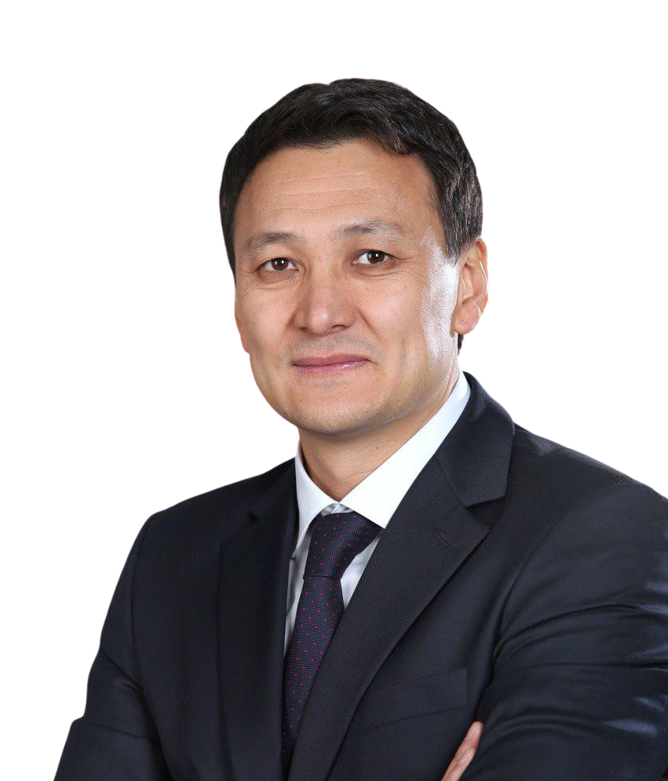

АЙМЕН
КАСЕНОВ

Аймен родился и вырос в многодетной, дружной семье 11 апреля 1974
года в г.Фрунзе. Его
папа по профессии инженер-автомобилист. Для Аймена папа был и остается образцом для
подражания и как принято сегодня говорить “role model”. Кроме профессиональных качеств Аймен
в своем отце ценит то, что он умеет всегда находить справедливое решение, быть медиатором и
неконфликтно разрешать спорные вопросы.
Мама у Аймена получила финансовое образование. И после рождения первенца посвятила свою
жизнь развитию и воспитанию детей. В этом ей очень помогала бабушка, Каламкаш Апа. Аймен до
сих пор с теплотой вспоминает свою любимую Каламкаш апу, ее мягкий голос, которым она читала
ему кыргызские народные сказки, пела перед сном колыбельную.
Аймен родился и вырос в многодетной, дружной семье 11 апреля 1974 года в г.Фрунзе. Его папа по профессии
инженер-автомобилист. Для Аймена папа был и остается образцом для подражания и как принято сегодня
говорить “role model”. Кроме профессиональных качеств Аймен в своем отце ценит то, что он умеет всегда
находить справедливое решение, быть медиатором и неконфликтно разрешать спорные вопросы.
Мама у Аймена получила финансовое образование. И после рождения первенца посвятила свою жизнь развитию и
воспитанию детей. В этом ей очень помогала бабушка, Каламкаш Апа. Аймен до сих пор с теплотой вспоминает
свою любимую Каламкаш апу, ее мягкий голос, которым она читала ему кыргызские народные сказки, пела
перед сном колыбельную.
Начиная с детства и заканчивая тем моментом, когда в 1992 году Аймен успешно оканчивает Фрунзенское
Суворовское училище и поступает в Ленинградское высшее военное училище связи. Именно эти годы учебы
научили принимать ответственностью и отвечать за свои слова и действия, мыслить стратегически,
разрабатывать тактику и договариваться. Он снискал среди своих сокурсников дружбу и любовь, а среди
своих преподавателей уважение. Он всегда держался просто, отвергал роскошь и предпочитал терпеть те же
неудобства, что и его сокурсники по военному училищу.
В связи с развалом Союза, Аймен возвращается на родину и принимает решение получить новую профессию. Он
поступает на экономический факультет Кыргызского Государственного Национального Университета (КГНУ), на
специальность «Управление материальными ресурсами и организация оптовой торговли средствами
производства». Сразу же по окончании университета начинает активную трудовую деятельность в компании
«Нефко» в качестве менеджера по логистике. Параллельно с работой, Аймен учится на юридическом факультете
Кыргызско-Российского Славянского Университета им.Б.Н.Ельцина, получая дополнительное образование.
«Наш путь - синтез духовного
наследия и современных технологий»
Аймен Касенов
Обладающий незаурядной целеустремленностью, твердым характером, ответственным отношением к рабочим
вопросам, а также большим багажом компетенций в области военного, финансового и управленческого дела,
начиная с 2002 года, Аймен получает предложения стать членом команды и возглавить большие коллективы от
различных ведущих бизнес компаний.
Дальнейшие этапы карьеры Аймена Касенова с 1996 по 2020 годы – это работа в сфере бизнеса и консалтинга.
Являлся членом правлении нефтяной компании «Альянс», Национальной компании «Кыргызстан Аба-Жолдору»
(2004-2005гг.); в разные годы занимал руководящие должности в крупнейших бизнес-структурах Кыргызстана,
Таджикистана, России и Казахстана (советник-партнер группы компаний «Марка Аудит» 2008-2010гг.,
г.Москва); заместитель Генерального директора ОсОО «Газпром нефть Таджикистан» (2007г.); Генеральный
директор ТОО «Газпром нефть» в Республике Казахстан (2008, 2010-2014 гг.).
Являясь руководителем крупной нефтяной компании ТОО «Газпром нефть Казахстан» Аймен Касенов отвечал за
стратегическое развитие компании и операционное управление.
Параллельно с руководством нефтяной компанией Аймен в 2014 году завершает обучение в Стокгольмской школе
экономики (корпоративная программа Executive MBA для топ-менеджеров ПАО «Газпром нефть»). О навыках
полученных в этой школе сам Аймен Касенов говорит: « …научили по новому думать, по новому смотреть на
обычные вещи, соприкосновение к профессионалам бизнеса, которые видят мир на 20-30 лет вперед.
Полученные знания и навыки помогли в моделировании новых бизнес структур в дальнейшей работе»
«Бийик максатка кызмат кылуу кадайдыр бир
нерсеге ээлик кылуудан
жогору турат»
«Акыйкаттык мыйзамдан, ырайымдуулук
адилеттүүлүктөн жогору
турушат»